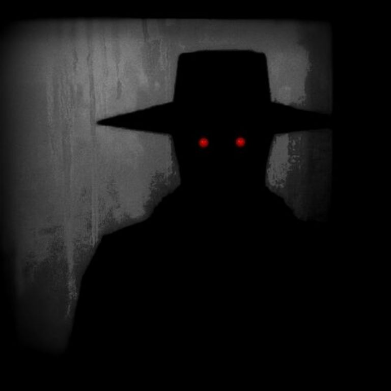

El siempre te observa
Primer encuentro: 08/18/2018
Ultimo encuentro: 03/11/2025
Contencion: Zona aislada
Nv de peligro:4 (Peligro constante)
Estado Actual: Vivo
["Las montañas apalache son conocidas por ser uno de los lugares mas embrujados o con mayor actividad paranormal en el mundo, incluos con este tipo de cosas aun se habita en estas.
Sin embargo existe una pequeña zona de bosque la cual a sido cercada y restringida al publico por su propia seguridad, pues dentro de esta zona habita algo peor que los espiritus,
la entidad n.º008 la cual fue apodada como: "El siempre te observa" esta entidad se muestra como un hombre adulto entre sus 40 a 45 años siendo las caracteristicas mas notorias
que la entidad pareciera estar rodeado por una capa de sombras las cuales lo mantienen con un aspecto similar a una sombra normal."]